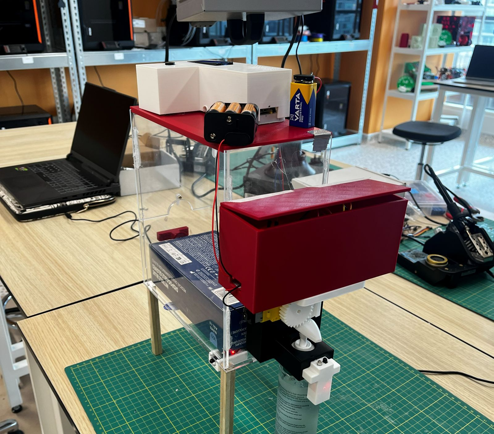
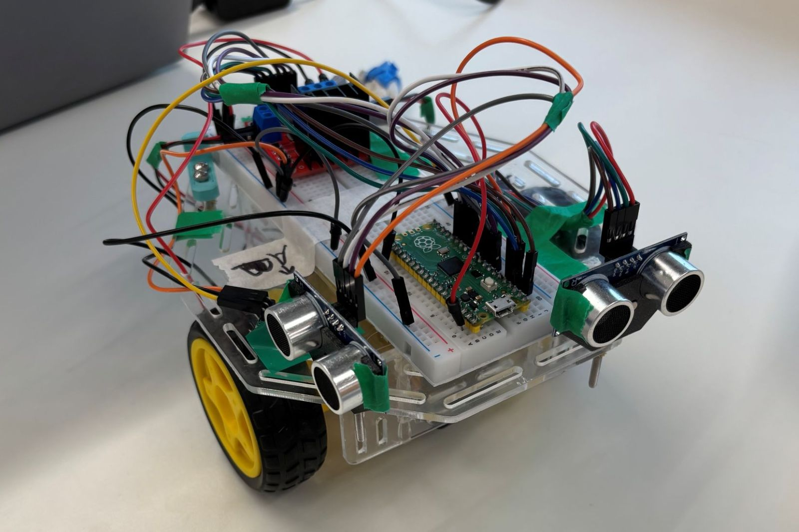
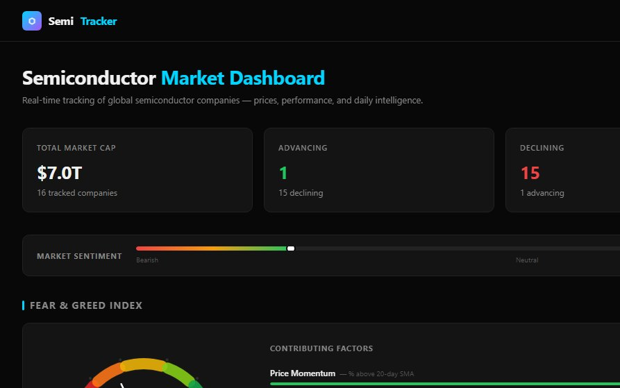
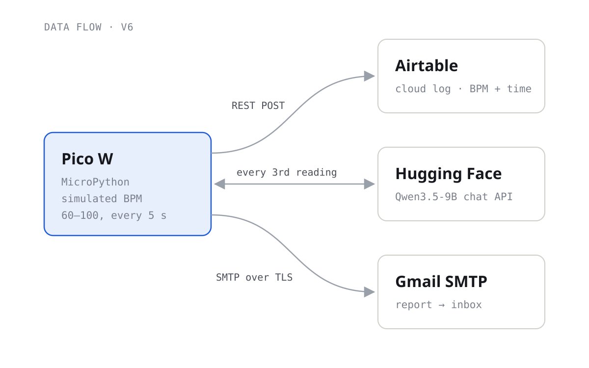
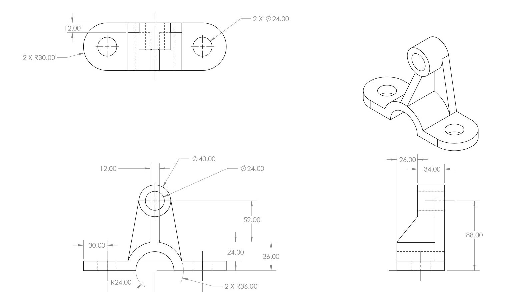
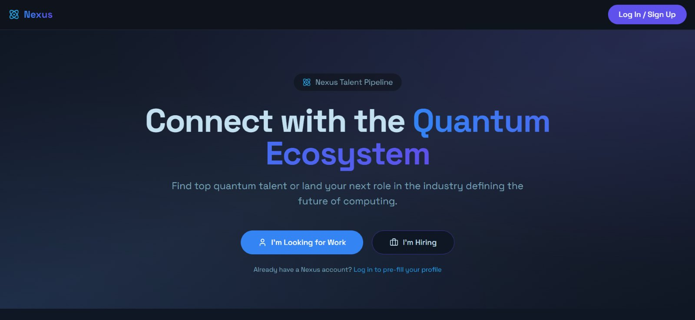

Engineering portfolio · 2025–26
I build things that sense, decide, and move.
I'm an Electrical and Computer Engineering student at Northeastern University. I spent my first year at the London campus building robots, medical-device prototypes, and data tools, usually by getting it wrong first and iterating until it worked.
- Studying
- EECE (Electrical and Computer Engineering) · Northeastern University
- Based
- Boston, MA
- Focus
- Embedded systems · CAD · Prototyping
Selected work
Projects
Each project page is a short case study: the problem, the constraints, what failed, and what finally worked.

Touch-free medical glove and sanitiser dispenser
A battery-powered station that keeps gloves sealed until a hand is detected, tracks how many glove boxes are left, and sounds an alarm if the hatch is left open. I scrapped the first mechanism after 50+ hours and redesigned it.
- Raspberry Pi Pico
- Autodesk Inventor
- 3D printing
- Laser cutting

Autonomous maze-navigating robot
A two-motor robot that had to drive straight, run a timed course, and then find its way through a maze using only two ultrasonic sensors. I wrote all of the code. My first approach failed completely, and a simpler rewrite finished the maze the next day.
- MicroPython
- PWM motor control
- HC-SR04
- AutoCAD

Semi Tracker
A dashboard that follows 16 semiconductor companies, with live prices, sparklines, and a five-factor Fear & Greed index. Plain JavaScript and a small PowerShell proxy.
- JavaScript
- REST APIs
- SVG charts

Wi-Fi heart-rate logger
A Pico W that logs readings to a cloud database, asks a language model for a quick assessment, and emails a report. Built up in six versions, one feature at a time.
- Pico W
- MicroPython
- SMTP

CAD, drafting and engineering computing
SolidWorks parts and drawings, AutoCAD and Inventor work, a Blender render, and MATLAB and Python analysis from both Cornerstone courses.
- SolidWorks
- MATLAB
- Blender

Nexus talent platform
Built during my Nexus-Hub internship: a proof-of-concept hiring platform for the quantum-computing industry, with onboarding, an admin review queue, and a candidate dashboard.
- Product design
- Lovable

First custom PCB
Learning Altium Designer by building an LED board end to end: custom symbol and footprint libraries, a real manufacturer part with its 3D model, and schematic capture. Layout is next.
- Altium Designer
- Schematic capture
- Footprint libraries
The London year
How the work built up
Each project reused something from the one before: motor control, then sensors, then cloud services, then full mechanical design.
- Maze robotPWM, sensors, control logic
- Glove dispenserCAD, fabrication, integration
- Wi-Fi logger · NexusNetworking, APIs, product
- Semi TrackerData, web, visualisation
- Custom PCBBoard design in Altium
Toolbox
Skills, with proof
Everything listed here is used in at least one project on this page.
Embedded and electronics
Microcontroller firmware, motor drivers, and sensors.
- MicroPython
- Raspberry Pi Pico / Pico W
- PWM
- H-bridge (L298N)
- Ultrasonic + IR sensing
- Servos
- I²C LCD
- Altium Designer (learning)
CAD and fabrication
From sketch to printed or laser-cut part.
- Autodesk Inventor
- SolidWorks
- AutoCAD
- Blender
- FDM printing (PrusaSlicer)
- Laser cutting
- Technical drawing
Software and data
Scripts, analysis, and small web tools.
- Python
- MATLAB
- JavaScript / HTML / CSS
- REST APIs
- PowerShell
- Git + GitHub
Design process
How I get from a vague brief to a working prototype.
- Morphological charts
- Weighted decision matrices
- Rapid iteration
- Technical writing
- Engineering ethics
About
Hi, I'm Justin.
I spent my first year of engineering at Northeastern's London campus. The Cornerstone courses there put me in the makerspace early: a maze-solving robot in the first semester and a medical-device prototype in the second, with web and IoT projects on the side.
Most of my work sits where hardware meets software: motor control, sensors, and the code that ties them together. Right now I'm designing my first PCB in Altium Designer.